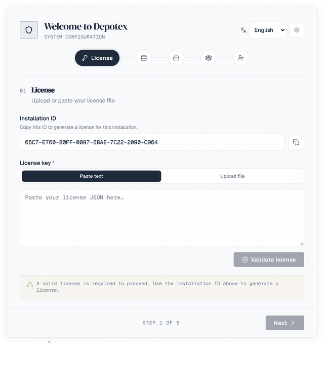
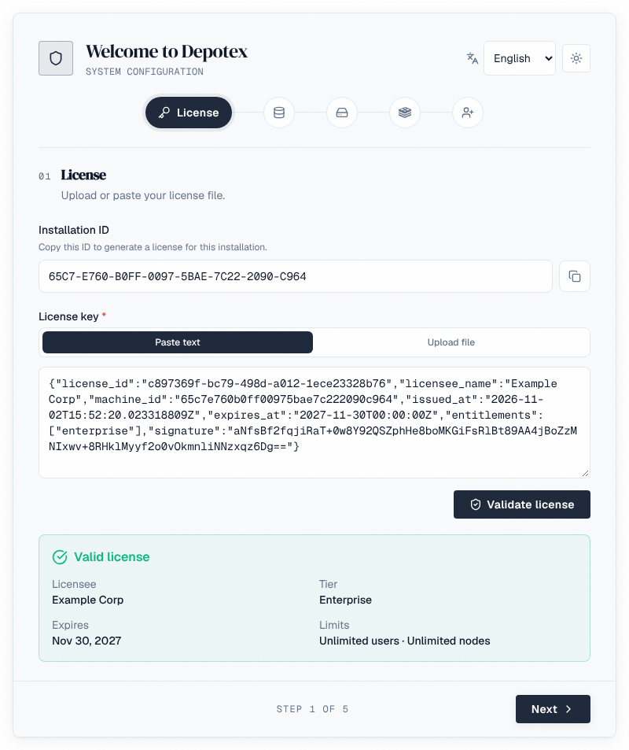
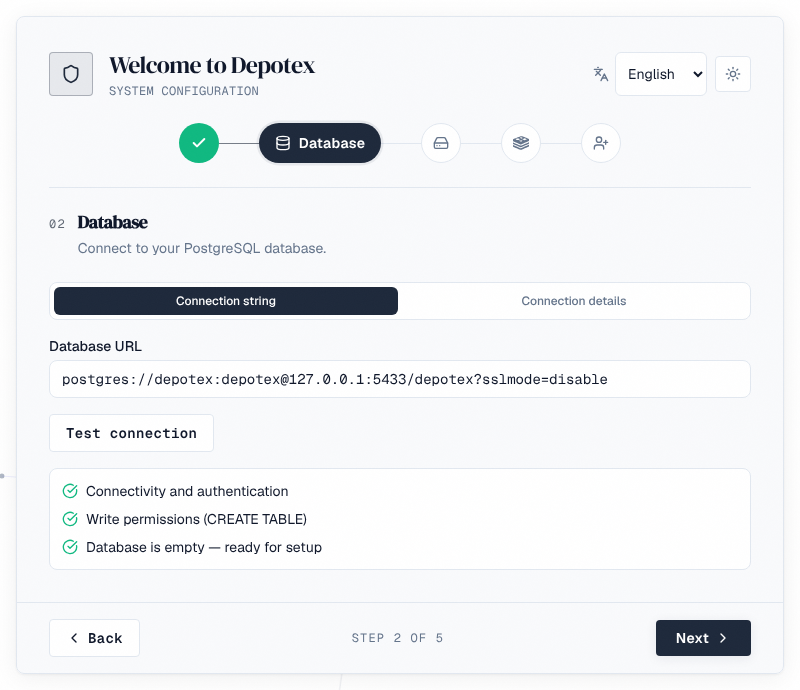
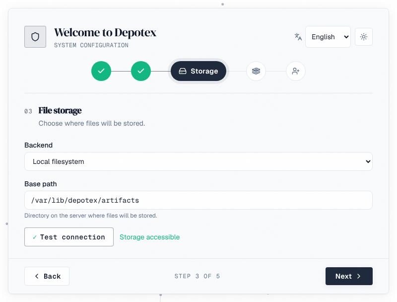
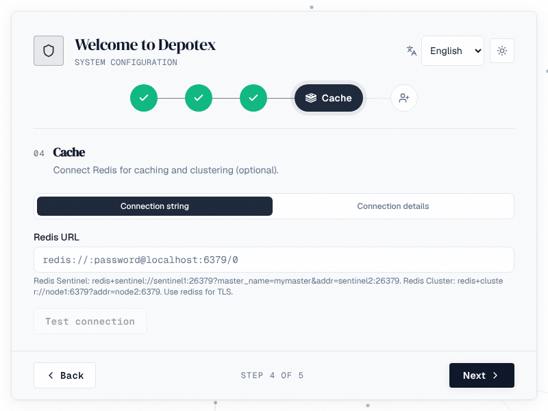
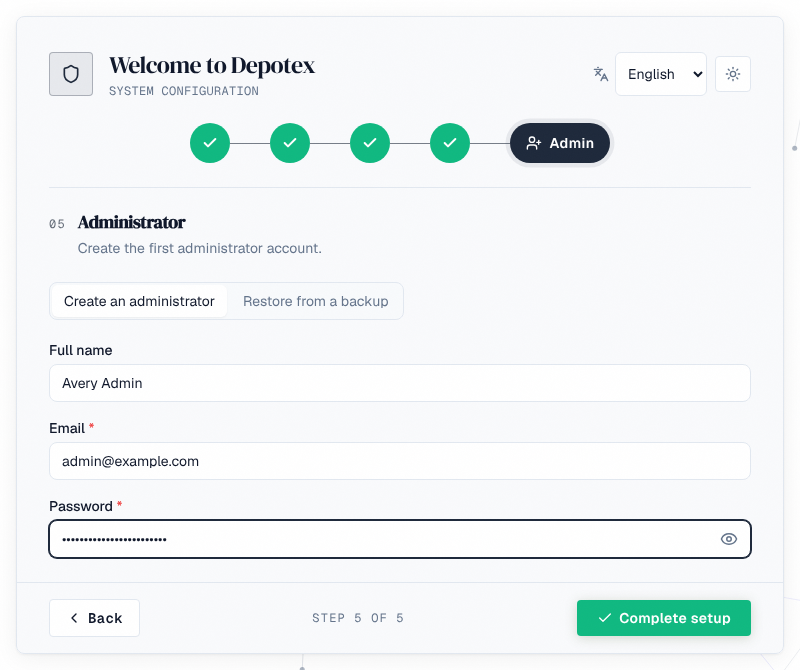

A server that has never been set up starts in setup mode: it serves only the setup wizard, protected by a one-time setup key. The wizard collects what the installation needs, stores every credential encrypted in the database, and restarts the server into normal mode. It takes about five minutes once PostgreSQL and your storage exist.

1. Before you start
| You need | Details |
|---|---|
| A PostgreSQL database | An empty database and a role that owns it (it creates tables, and roles for plugins that use a database: CREATEROLE). Not a superuser. See Plan an installation. |
| Storage for artifacts | A directory on the server, an S3 bucket, a MinIO bucket or an Azure Blob container, which must already exist. |
| Redis (optional) | Needed only for a cluster. One server, a Sentinel group or a Redis Cluster. |
| CONFIG_ENCRYPTION_KEY | Set on the server before its first start, and kept safe: it encrypts every stored credential. See Environment variables. |
| A license | Bound to the installation ID the wizard shows on its first step. See Get a license. |
2. Open the wizard
- Start the server — With DATABASE_URL and CONFIG_ENCRYPTION_KEY set (see Install Depotex).
- Find the setup link — The log prints a line like open the setup wizard … setup_url=https://depotex.example.com/setup?token=…. On Kubernetes the key is SETUP_TOKEN in the keys file prime-secrets.sh wrote.
- Open it — The page reads the key and removes it from the address bar. Anyone without the key gets nothing from setup mode, so nobody else who can reach the server can take it over first.
- Choose your language — The language menu at the top. The first administrator keeps it as their language.
The key changes each time the server restarts, unless you set it with SETUP_TOKEN (do that when several servers share one setup, or to script it). Requests in setup mode are limited to RATE_LIMIT_SETUP a minute per address (30 by default).
3. Step 1: License

- Installation ID: what the license is bound to. Copy installation ID and send it with your license request (see Get a license). The same ID is printed by ./server --machine-id.
- Upload file (or drop the .json file on the box) or Paste text, then Validate license. A valid license shows its licensee, tier, expiry and user and server limits.
- Next stays off until the license is valid for this installation.
4. Step 2: Database

- Enter the database to keep Depotex's data in (the wizard doesn't fill it in from DATABASE_URL, which is only what the server boots with). Use Connection string, or Connection details (host, port, database name, user name, password and SSL mode: Disable, Prefer, Require, Verify CA or Verify full).
- Test connection checks that Depotex can sign in, that it may create tables, and whether the database is empty.
- A database that already holds tables is flagged: setup runs migrations, which may clash with what's there. Wipe database deletes every table, all data and every schema in it, after you confirm. Use it only on a database you made for Depotex.
- Add pool_max_conns to the URL to size the connection pool now: a value set at first boot is kept. See Database connections.
5. Step 3: Storage

| Backend | Settings |
|---|---|
| Local filesystem | Base path: a directory on the server. In a cluster, a volume mounted at the same path on every server. |
| AWS S3 | Bucket, Region; Access key ID and Secret access key, or leave both empty to use the server's IAM role; optionally a Role to assume and its External ID. |
| MinIO (S3-compatible) | Endpoint (host:port), Bucket, Use SSL, Access key and Secret key |
| Azure Blob Storage | Container, Storage account and Storage key (base64) |
The bucket or container must exist. The wizard writes and reads a test object before it lets you go on; credentials are stored encrypted. Change storage later in Settings → Storage (see Storage).
6. Step 4: Cache

- Leave it empty for a single server: everything works without Redis.
- For a cluster, give a Redis URL: redis:// or rediss:// for one server, redis+sentinel://…?master_name=… for Sentinel, redis+cluster://… for a Redis Cluster. Connection details fill in a single server only. See Single Node & Cluster → Redis.
- Test connection connects before you go on.
7. Step 5: Administrator, or restore

Choose how this installation starts:
- Create an administrator: full name, email and password of the first super admin. Choose a long password (the wizard takes 8 characters or more; people's passwords later need AUTH_PASSWORD_MIN_LENGTH, 12 by default).
- Restore from a backup: bring back an installation from a .dxbak file, uploaded here (sent in pieces, resumed after a dropped connection) or copied beforehand into backups/import/ of the storage from step 3. The backup must have been made with the same CONFIG_ENCRYPTION_KEY; people sign in with the backup's accounts afterwards; artifacts themselves aren't in backups and must already be in that storage. See Backups → Disaster recovery.
Complete setup saves everything, runs the database migrations and restarts the server in normal mode. The page waits and then takes you to sign-in.
8. After setup
- Sign in — As the administrator you created.
- Set the Depotex address — Settings → General: the address people and package managers use. Links in emails, single sign-on and package metadata depend on it.
- Configure email — Settings → Application → Email, so invitations and password resets work. See Email.
- Bring people in — Directories, single sign-on or invitations. See Users & Directories.
- Turn on backups — Settings → Backups. See Backups.
- Check health — Settings → Advanced → System check (Pro). See System Check.
- Harden it — Work through the production checklist.
9. If setup fails
| What you see | What to do |
|---|---|
| The setup page says the key is missing or wrong | Open the exact setup_url from the newest log line; the key changes on every restart unless SETUP_TOKEN is set |
| Database: can't connect or can't create tables | Check host, port and SSL mode; the role needs to own the database (or CREATE on it) |
| Storage isn't accessible | The bucket or container must exist; check the credentials, region or endpoint, and that the server can reach it (proxy, firewall) |
| Couldn't connect to Redis | Check the URL scheme for Sentinel or Cluster, the password and TLS (rediss) |
| Setup couldn't be completed | The step named in the message has a value that no longer works; go back to it. The server log says what failed |
Nothing is saved until Complete setup succeeds, so you can restart the server and begin again at any point before that.